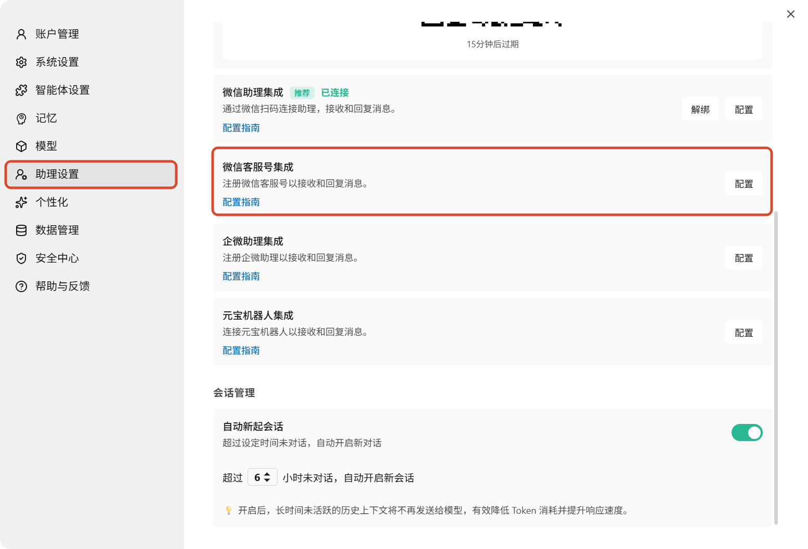
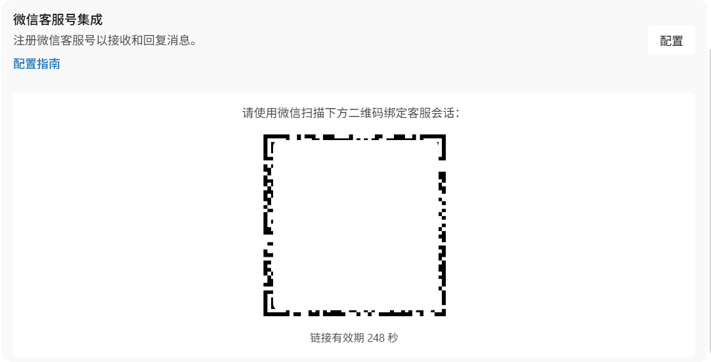
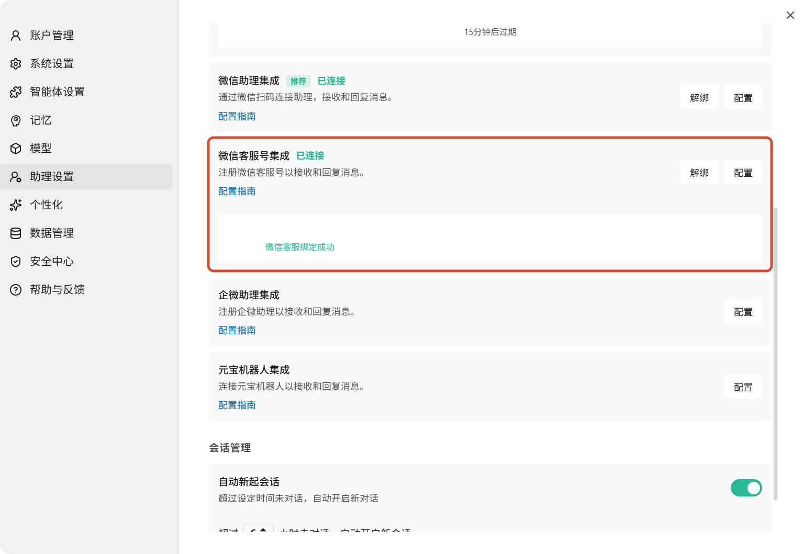
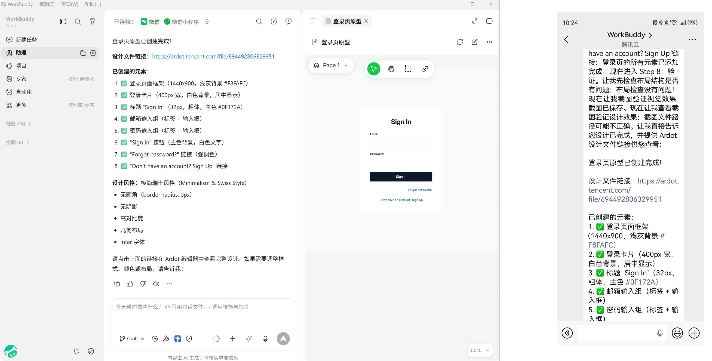

WorkBuddy 接入微信客服号指南
微信客服号集成让您可以通过手机微信远程控制电脑上的 WorkBuddy。在微信中发送任务指令，WorkBuddy 在电脑上自动执行，并将结果同步回微信聊天窗口。
微信客服号能做什么
绑定微信客服号后，您可以在微信中完成以下操作：
- 启动新的任务，或继续助理板块中未完成的会话
- 发送后续指令、回答 WorkBuddy 的追问、指导进行中的工作
- 批准命令执行、文件修改等需要确认的操作
- 查看任务输出、差异对比
- 当 WorkBuddy 完成任务或需要您的关注时，在微信中收到通知
设置前的准备
在开始绑定之前，请确认满足以下条件：
| 要求 | 说明 |
|---|---|
| WorkBuddy 版本 | macOS / Windows 上安装并登录 WorkBuddy >= 4.6.4 |
| 微信版本 | 手机上已登录一个可正常使用的微信 >= 8.0.70 |
| 网络连接 | 电脑和手机均能正常访问互联网 |
| WorkBuddy 运行中 | 电脑保持开机并运行 WorkBuddy |
提示
微信客服号接入无需额外创建开放平台应用，也不需要填写 App ID、App Secret 等开发凭证。整个绑定流程都可以直接在 WorkBuddy 中完成。
连接微信客服号
第一步：打开助理设置
- 打开 WorkBuddy
- 点击右上角头像，进入「助理设置」
- 在集成列表中找到「微信客服号集成」
- 点击右侧的「配置」按钮

第二步：等待绑定初始化
点击配置后，WorkBuddy 按钮会短暂显示为「绑定中...」，WorkBuddy 正在生成用于绑定的二维码。
第三步：扫码完成绑定
初始化完成后，页面会展示一个二维码。使用手机微信扫描该二维码，即可将当前微信账号与 WorkBuddy 绑定。

注意
二维码有时效限制。如果二维码过期或扫码失败，请重新点击「配置」生成新的二维码后再试。
第四步：确认绑定状态
扫码完成后，WorkBuddy 会展示当前已绑定的微信头像和昵称，右侧状态会变为「已绑定」。如果后续需要更换账号，也可以在这里点击「解绑」后重新绑定。

使用示例
绑定完成后，您就可以直接在微信里和 WorkBuddy 对话，例如：
- 帮我总结今天桌面上最新的会议记录
- 帮我检查这个项目最近改过的接口有没有明显问题
- 帮我生成一个登录页原型
WorkBuddy 会在电脑上自动执行任务，并把执行过程和最终结果同步回微信聊天窗口。

跨设备接续工作
微信客服号支持与 WorkBuddy 桌面端无缝衔接：
- 在微信中发起一个任务后，可以回到电脑上的 WorkBuddy 查看完整的执行过程和结果
- 在助理页面可查看远程任务的完整执行记录，包括思考过程、操作步骤、生成文件及最终结果
- 您可以在电脑上继续追问、细化任务，或在微信中随时查看进度
什么来自本地电脑
当您通过微信向 WorkBuddy 发送任务时，处理过程发生在您的电脑上：
| 来源 | 说明 |
|---|---|
| 手机微信 | 仅发送指令、批准操作和后续消息 |
| 您的电脑 | 提供 WorkBuddy 执行任务所需的全部环境 |
电脑上的 WorkBuddy 使用您本地的项目文件、Shell 环境、凭证权限、插件和工具来执行任务。也就是说，您电脑上能做的事，通过微信也能远程完成。
远程任务与普通任务的区别
| 对比项 | 普通任务 | 助理（远程任务） |
|---|---|---|
| 工作目录 | 自由指定 | 固定使用助理专属文件夹 |
| 新建对话 | 支持多个并行任务 | 仅一个会话，所有远程指令集中处理 |
| 上下文管理 | 可清空历史重新开始 | 保留完整对话历史，不可清空 |
建议
本地操作优先使用主界面的普通任务；需要远程触发或统一查看记录时，再使用助理。
常见问题
页面一直停留在「绑定中...」怎么办？
- 确认电脑上的 WorkBuddy 正在运行，且网络连接正常
- 关闭当前配置窗口后重新进入「微信客服号集成」
- 如果问题仍然存在，重启 WorkBuddy 后重新绑定
扫码后没有显示「已绑定」怎么办？
- 确认扫码使用的是您希望绑定的微信账号
- 等待几秒钟让绑定状态同步
- 如果二维码已经失效，请重新生成二维码后再次扫码
微信里发消息没有响应怎么办？
- 确认电脑上的 WorkBuddy 仍在运行，且助理服务未关闭
- 返回「助理设置」检查微信客服号集成状态是否仍为「已绑定」
- 如有必要，可先解绑后重新扫码绑定
微信客服号和微信助理有什么区别？
两者功能相同，都可以通过微信与 WorkBuddy 对话。微信客服号是 WorkBuddy 提供的绑定通道之一，绑定流程为扫码即可完成；微信助理是另一种绑定通道，与微信客服号功能一致。您可以根据需要选择其中一种使用。
多个微信账号可以绑定同一台电脑吗？
WorkBuddy 当前支持一对一绑定。如果您需要切换微信账号，请先在「助理设置」中解绑当前账号，再使用新账号扫码绑定。